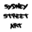

Personal
Things I Like
 Goodreads
Goodreads IMDb
IMDb Last.fm
Last.fmSydney Street Art
Description: When I arrived to Sydney in January 2017 to start my postdoc, I was immediately exposed to the incredible richness of this city's street art scene. Encountering more and more amazing works around every corner, I felt that these fragile and temporary artworks should somehow be preserved and catalogued, so I decided to start "Sydney Street Art" project. Its aim is to photograph and geotag Sydney's graffiti, collect information about the artists responsible for the works, and present all the data on the website.
Current status: The database consists of 582 artworks, created by 44 identified artists, in 238 distinct location within 25 suburbs of Sydney.
More:
sydneystreetart.com Project's FB page
Project's FB page
Math Puzzles
Description: Over the years I have encountered many interesting mathematical puzzles, not always related to my research. For some time now I have been collecting the best of them and I intend to create a nice little collection. I hope to gradually write them down clearly and upload here.
Current status: Under construction...
Art Galleries
Description: During my conference and holiday travels I often have the chance to visit local art galleries. For the last four years I have been recording the artworks that impressed me most, with an intention to create a catalogoue of my favourite paintings, sculptures and installations.
Current status: Under construction...